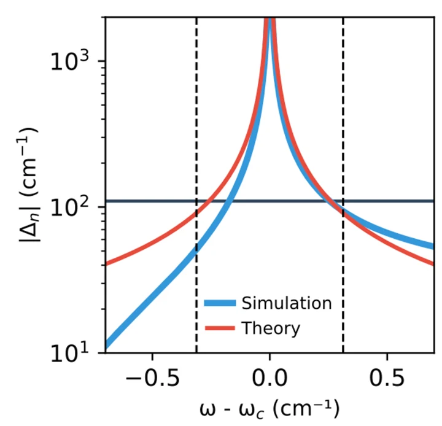
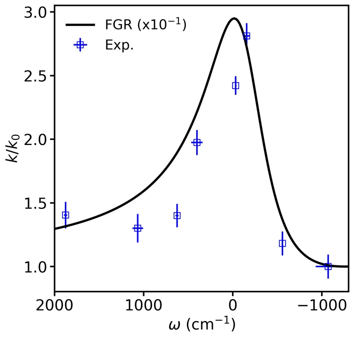
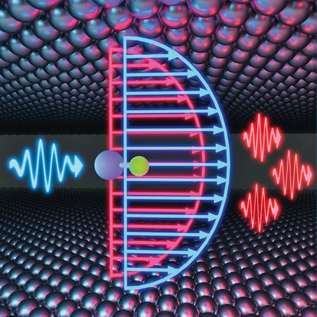
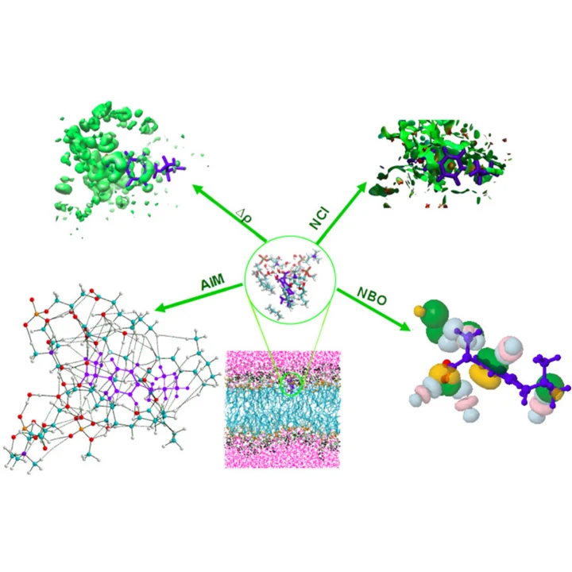

Research
Publications
Molecular simulation, light–matter interactions, and the mechanisms behind chemical reactivity.
View Google ScholarNewest first
2026


2025


2020


Research
Molecular simulation, light–matter interactions, and the mechanisms behind chemical reactivity.
View Google ScholarNewest first



